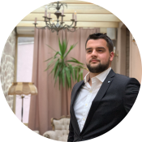

Personal detailsName: Godinjak Haris Student, Computer Science, International University Sarajevo
Adress: Lepenička 101, Sarajevo Phone number: +38762832267 Email haris.goda@gmail.com Instagram haris_godinjak Driving lesson: B - category Skills
|
Godinjak HarisBioMy name is Haris Godinjak. I was born in Sarajevo, Bosnia & Herzegowina. I am studing Computer Science at International University Sarajevo. I am interested in computer science and car industry. I love to play sports in my free time and I belive it is the best way to run away from everyday problems. I speak four languages: Bosnian, English, German and Turkish. Education
Interships and Working Experience
I am looking for some programming experience in prestige companies. Also I would love to work in a project related with Computer Science which would improve my expertiese and give me more experience. TravelI love to travel. I had opportunity to visit many countries and I believe it was really beneficial because wherever went, I had opportunity to meet and learn about people and their culture and also to make friendships and bussiness conection with those people. The countries I visited so far
Sport carrerDuring my primary school period I was always interested in playing certain sports. For my highschool I took part in basketball and volleyball club. From 2017 - 2019 I was playing volleyball for "OK Ilidža". After my volleyball carrer I decided to start running. So far I took part in one running race "Zenica trči 2019". |